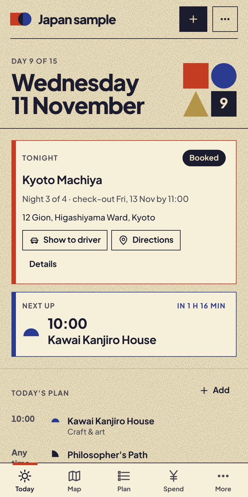
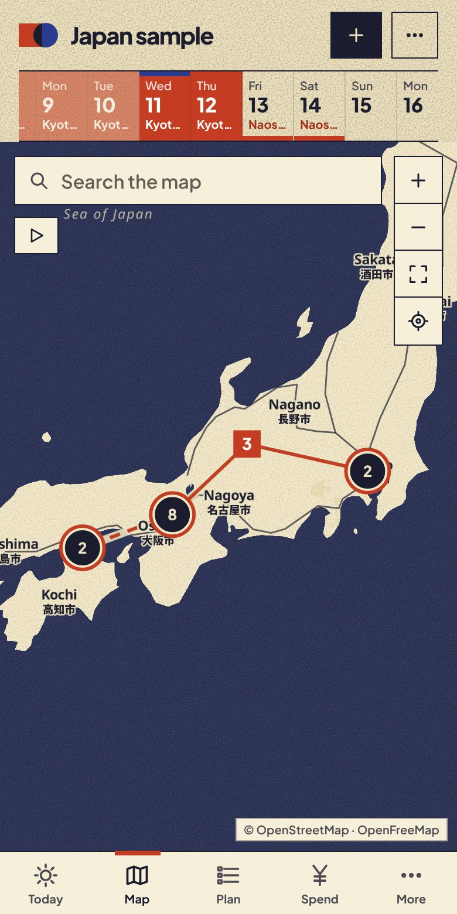
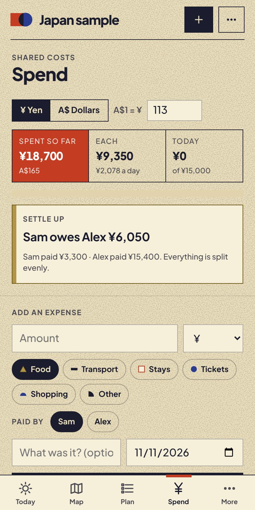
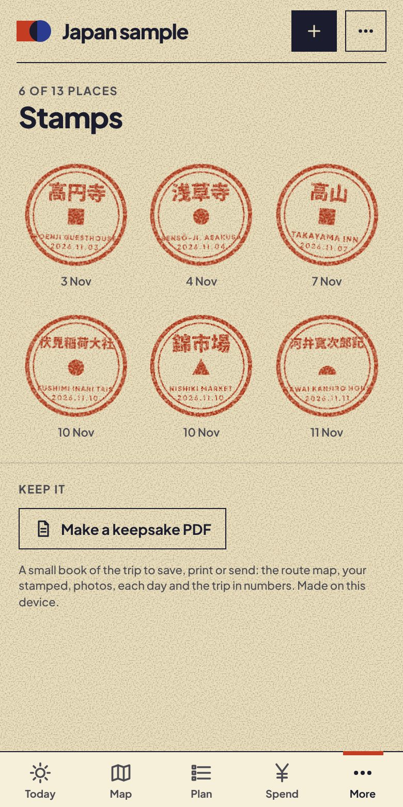

Stays, plans, spending and saved places on one map you both carry. Works with no signal. Stays on your phones.

One of you has the hotel address. The other has the train times. The bar you both wanted to try is in a list neither of you can find. You're standing outside a station with one bar of signal, and the taxi driver can't read the address. Planning a trip together shouldn't mean one person carries it all in their head.
Paste a booking or import the PDF and Waymark fills in the dates, price and address. Bring in your saved Google Maps list in one go. See tonight's stay and what's next the moment you open it.

Share the trip between your phones. Log who paid and settle up in a tap. Mark the places you both love.

Maps, bookings and phrases work offline. Show a driver the address in Japanese, Korean or Thai. Carry on into the next country without starting again.

Every place you loved earns a stamp, a postcard or a patch. At the end, Waymark turns the whole trip into a small book you can save, print or send: the route, the keepsakes, your photos and each day as it happened.
On an iPhone, open Waymark in Safari, tap Share, then Add to Home Screen. It then works like any other app, with or without signal.
Fifteen countries so far. The map, phrases, money and keepsake book all follow the country you choose.
Paste it, import the PDF, or bring in a Google Maps list. Then send the trip to the other phone.
We couldn't find a trip planner that worked offline, split costs for two and kept our plans to ourselves. So we built one, and took it across Japan for 23 days.